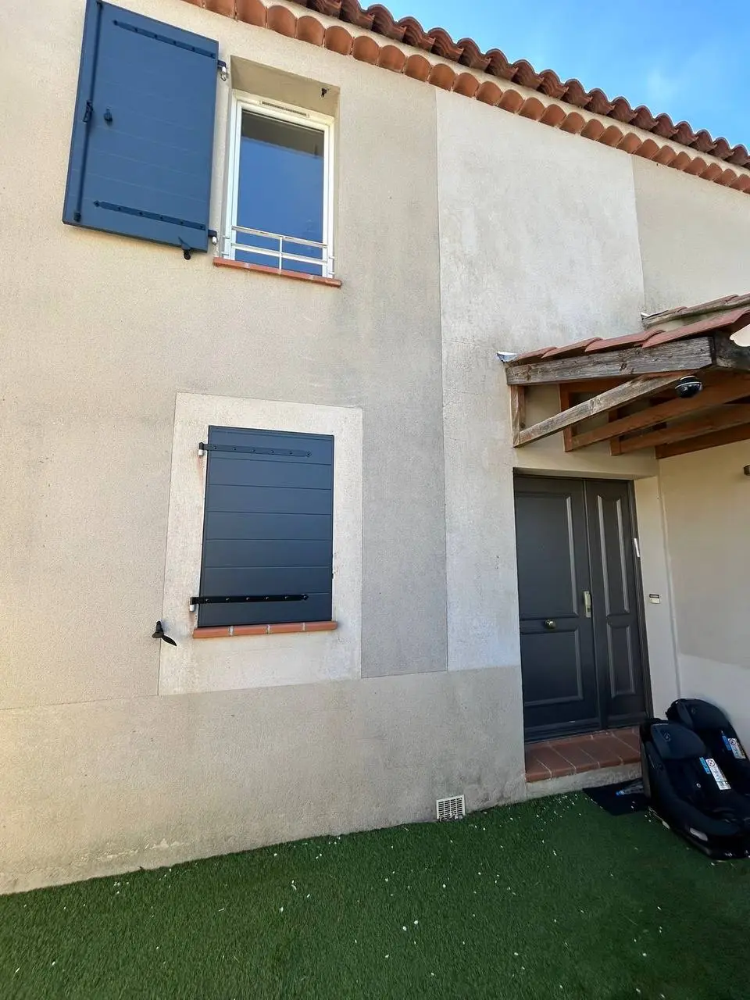

Changer ses fenêtres à Marseille est l'un des travaux qui améliore le plus le confort d'un logement : moins de courants d'air, moins de bruit, une chaleur d'été mieux maîtrisée et des factures d'énergie allégées. Mais entre les matériaux, les vitrages, les types de pose et les prix qui vont du simple au double, il est facile de s'y perdre. Ce guide complet réunit l'essentiel pour remplacer vos fenêtres sereinement : quand se lancer, combien ça coûte, quoi choisir et comment se déroule un chantier, avec les spécificités bien réelles du climat et du bâti marseillais.

- Quand changer ses fenêtres : les signes qui ne trompent pas
- Combien coûte le changement de fenêtres ?
- Quel matériau choisir : PVC, aluminium ou bois
- Quel vitrage pour votre logement
- Les types de pose : rénovation ou dépose totale
- Aides, TVA et financement
- Changer ses fenêtres à Marseille : le contexte local
- Les étapes d'un projet avec M13
- Foire aux questions
Quand changer ses fenêtres : les signes qui ne trompent pas
On repousse souvent ce chantier, faute de savoir s'il est vraiment nécessaire. Pourtant, quelques signaux montrent clairement qu'il est temps de remplacer vos fenêtres.
Inconfort thermique : courants d'air, froid, chaleur
- Vous sentez de l'air passer près des ouvrants, même fermés.
- La pièce reste froide en hiver malgré le chauffage, ou surchauffe l'été côté sud.
- Vous devez rajouter des rideaux épais ou du boudin de porte pour compenser.
Signes d'usure : condensation, ouverture difficile, simple vitrage
- De la buée ou de la condensation apparaît entre les deux vitres : le vitrage n'est plus étanche.
- La fenêtre coince, grince ou ne se verrouille plus correctement.
- Vous avez encore du simple vitrage ou des menuiseries de plus de 25 ans.
Facture d'énergie et bruit : les fenêtres en cause
- Votre facture de chauffage augmente sans raison évidente : les fenêtres sont souvent le premier point de fuite après la toiture.
- Le bruit de la rue devient gênant : sur un axe passant, un vitrage phonique change tout.
Si plusieurs de ces signes vous parlent, le remplacement se rentabilise vite en confort comme en énergie. Reste à définir le budget.
Combien coûte le changement de fenêtres ?
C'est la première question de tout le monde, et la réponse honnête est : « ça dépend ». Voici toutefois des ordres de grandeur pose comprise, constatés à Marseille pour du double vitrage de qualité courante.
Fourchettes de prix selon le type de fenêtre
| Type de fenêtre | Dimensions indicatives | Prix posé (PVC) |
|---|---|---|
| Fenêtre 1 vantail | 60 × 75 cm | 250 – 450 € |
| Fenêtre 2 vantaux | 120 × 115 cm | 400 – 800 € |
| Porte-fenêtre 2 vantaux | 140 × 215 cm | 700 – 1 300 € |
| Baie coulissante | 200 × 215 cm | 900 – 2 000 € |
L'aluminium se situe généralement 30 à 50 % au-dessus du PVC à dimensions égales. Pour aller plus loin, on détaille tous les facteurs et les postes du devis dans notre guide dédié : prix d'une fenêtre PVC à Marseille.
Ce qui fait varier le devis
- Les dimensions et le type d'ouverture (à la française, oscillo-battant, coulissant).
- Le matériau et le vitrage (phonique, à isolation renforcée, contrôle solaire).
- La dépose de l'ancienne fenêtre et l'évacuation des gravats.
- Les options : volet roulant intégré, coloris, sécurité renforcée.
Le vrai réflexe : comparer des devis détaillés (fourniture + pose + dépose + finitions), pas des prix bruts « à la louche ».
Quel matériau choisir : PVC, aluminium ou bois
Le matériau détermine à la fois le prix, l'esthétique, l'isolation et l'entretien. Voici l'essentiel pour trancher.

Le PVC : le meilleur rapport qualité/prix
- Excellente isolation thermique et phonique, sans entretien.
- Le choix par défaut pour la majorité des logements marseillais.
- Un peu moins fin que l'alu sur les grandes largeurs.
L'aluminium : finesse et grandes surfaces
- Profilés fins et look contemporain, parfait pour les baies vitrées.
- Très résistant et sans entretien, mais plus cher (+30 à +50 %).
- Idéal pour maximiser la surface vitrée et la lumière.
Le bois : chaleureux mais exigeant
- Rendu haut de gamme et chaleureux, bonne isolation naturelle.
- Demande un entretien régulier, surtout face à l'air marin.
- Réservé aux projets qui recherchent ce cachet précis.
Le duel qui revient le plus souvent, c'est PVC contre alu. On l'a traité en détail (prix, isolation, esthétique, entretien) dans notre comparatif : fenêtre PVC ou aluminium : que choisir à Marseille ?.
Quel vitrage pour votre logement
Le vitrage compte autant que le cadre. Aujourd'hui, le double vitrage est le standard ; les variantes se choisissent selon votre situation.
Double vitrage standard, phonique ou à isolation renforcée
- Le double vitrage standard convient à la grande majorité des logements.
- Le vitrage phonique se justifie sur les grands axes marseillais bruyants.
- Le vitrage à isolation renforcée (VIR) améliore encore le confort thermique.
Le contrôle solaire, un vrai plus dans le Sud
- Un vitrage à contrôle solaire limite la surchauffe des pièces exposées plein sud ou ouest.
- Il réduit le recours à la climatisation en été, un argument de poids sous le soleil de Marseille.
Les types de pose : rénovation ou dépose totale
À fenêtre égale, la qualité de la pose fait toute la différence sur l'étanchéité et l'isolation. Deux grandes méthodes existent.

La pose en rénovation : rapide et sans gros travaux
- La nouvelle fenêtre se pose sur le dormant existant, conservé.
- Chantier rapide et propre (1 à 2 h par fenêtre), peu de poussière.
- Léger recouvrement du cadre : on perd quelques centimètres de clair de vitrage.
La dépose totale : performance maximale
- On retire tout l'ancien bâti jusqu'au mur.
- Meilleure isolation et surface vitrée préservée.
- Chantier plus long et souvent avec reprises d'habillage.
Le bon choix dépend de l'état de vos dormants : on le tranche ensemble lors de la prise de mesures. Découvrez notre pose de fenêtres sur-mesure à Marseille et nos chantiers réalisés.
Aides, TVA et financement
Changer ses fenêtres pour améliorer l'isolation peut ouvrir droit à des aides à la rénovation énergétique. Elles restent toutefois soumises à conditions.
- MaPrimeRénov' et primes CEE : sous conditions de ressources et de performance, avec un installateur certifié RGE.
- TVA réduite à 5,5 % possible sur les travaux d'amélioration énergétique dans un logement de plus de deux ans.
- Pour un simple remplacement de confort, mieux vaut raisonner directement sur le prix réel du devis.
On vous conseille honnêtement selon votre situation, sans vous promettre une aide à laquelle vous n'auriez pas droit.
Changer ses fenêtres à Marseille : le contexte local
Le climat et le bâti marseillais ont un vrai impact sur le choix des fenêtres et sur la pose.
Chaleur, mistral et air marin
- La chaleur d'été rend le vitrage à contrôle solaire précieux côté sud.
- Le mistral exige des menuiseries parfaitement étanches à l'air.
- L'air marin favorise le PVC et l'alu sans entretien, surtout près du littoral (La Ciotat, Cassis).
Copropriétés et bâti ancien du centre-ville
- En copropriété, l'aspect extérieur des fenêtres peut être encadré par le règlement.
- Dans le bâti ancien (13006, 13007, 13008…), peu d'ouvertures sont réellement « standard » : la prise de mesures doit être précise.
- Une déclaration préalable en mairie peut être nécessaire si l'aspect extérieur change.
Les étapes d'un projet avec M13
Pour y voir clair, voici comment se déroule concrètement un remplacement de fenêtres avec M13 Menuiseries.
- 1. Le premier contact : vous décrivez votre besoin par téléphone ou via le formulaire de devis.
- 2. La visite et les mesures : je me déplace, je prends les mesures et je vous conseille selon votre logement.
- 3. Le devis détaillé : gratuit, clair, sous 48 h, sans engagement.
- 4. La fabrication sur-mesure : vos fenêtres sont réalisées aux bonnes dimensions.
- 5. La pose : soignée, propre, avec finitions et vérification de l'étanchéité.
Prêt à changer vos fenêtres ?
Je prends les mesures et je vous remets un devis clair et gratuit sous 48 h, à Marseille et dans les Bouches-du-Rhône et le Var.
Demander mon devis gratuitFoire aux questions
Quand faut-il changer ses fenêtres ?
Il est temps de changer vos fenêtres quand vous ressentez des courants d'air, de la condensation entre les vitres, des difficultés à ouvrir ou fermer, ou une facture de chauffage qui grimpe. Un simple vitrage ou des menuiseries de plus de 25 ans justifient presque toujours un remplacement.
Combien coûte le changement d'une fenêtre à Marseille ?
Comptez en moyenne 400 à 800 € posée pour une fenêtre PVC double vitrage à deux vantaux. Le prix varie selon les dimensions, le matériau, le vitrage et la dépose. Seul un devis après mesures donne un montant juste.
Faut-il une autorisation pour changer ses fenêtres ?
Si vous modifiez l'aspect extérieur (couleur, matériau, découpage), une déclaration préalable de travaux en mairie est souvent nécessaire. En copropriété, l'accord du syndic peut être requis. Un remplacement à l'identique reste généralement libre.
Combien de temps dure le remplacement de fenêtres ?
Comptez 1 à 2 heures par fenêtre en pose de rénovation. Un chantier de plusieurs fenêtres se réalise sur une à deux journées, selon l'accès au logement et le type de pose.
Dans quels secteurs autour de Marseille intervenez-vous ?
M13 Menuiseries intervient sur tout Marseille et ses arrondissements, ainsi qu'à Aubagne, Gémenos, La Ciotat, Cassis et plus largement dans les Bouches-du-Rhône et le Var.
En résumé
Changer ses fenêtres à Marseille, c'est d'abord repérer les signes d'usure, puis choisir le bon matériau, le bon vitrage et le bon type de pose selon votre logement et le climat local. Côté budget, comptez le plus souvent 400 à 800 € par fenêtre PVC posée, à affiner avec un devis détaillé. Vous avez un projet ? Demandez votre devis gratuit, on en parle et je vous conseille selon vos ouvertures.